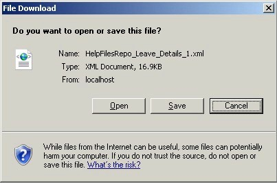
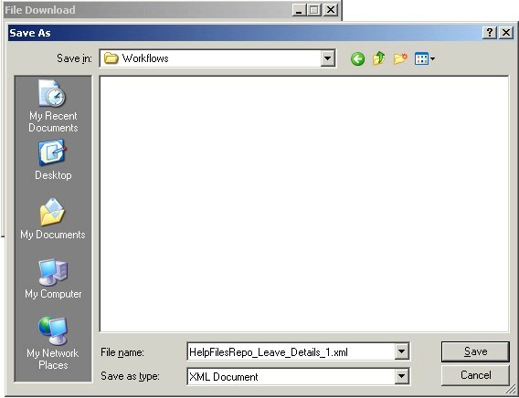
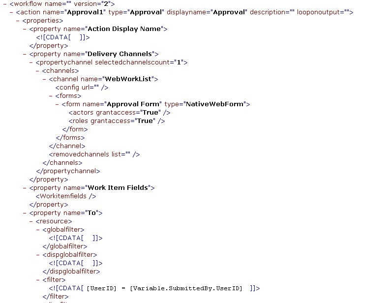

No
The Windows File Download dialog opens when you select the Export option from the Tools menu.

File Download dialog displayed for Process Definition Export
You can use the following controls in the dialog to export a AVEVA Work Tasks process definition as an XML file.

Save As dialog for saving the exported XML file

Exported Process Definition XML file